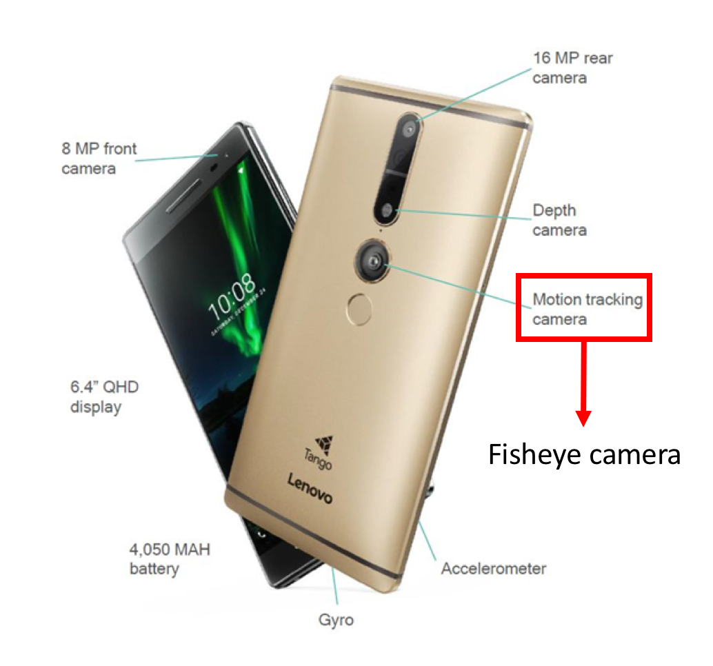
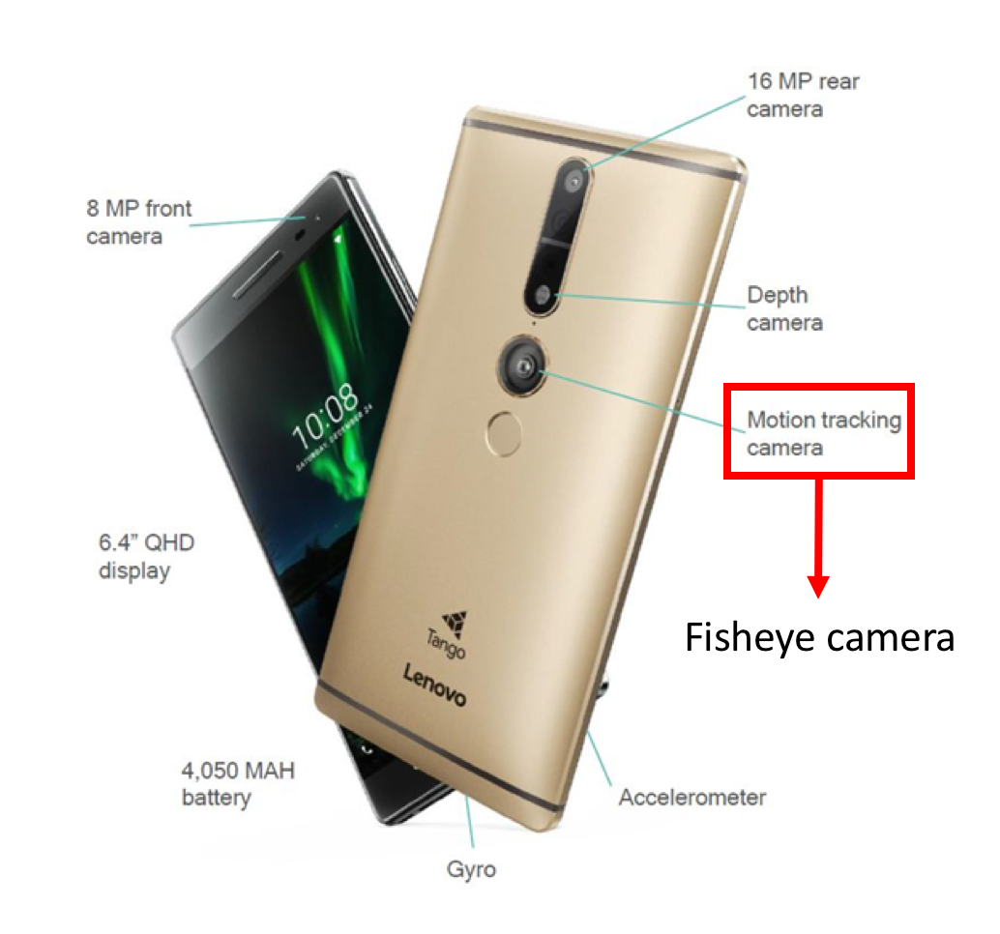
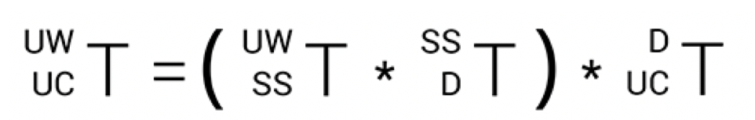
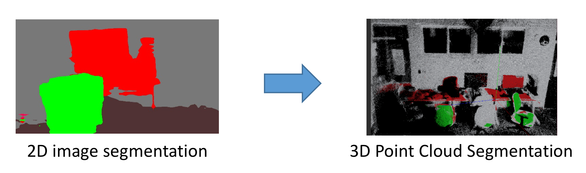
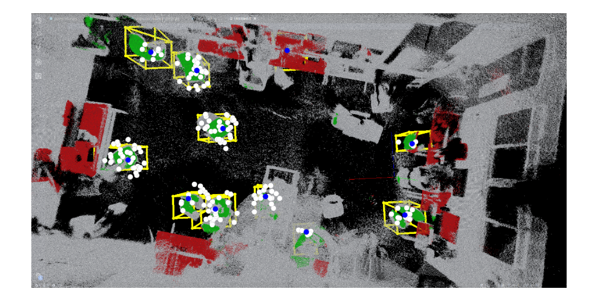
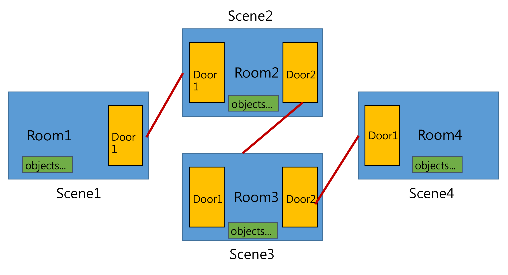
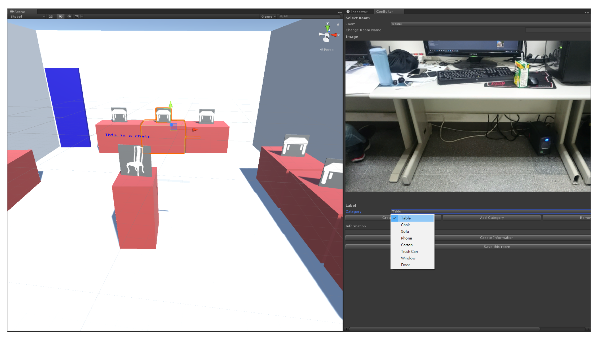
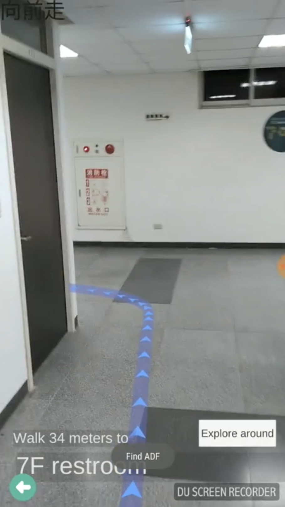

Tango Multi Reality
Tango indoor navigation
Drew the AR Navigation route on the floor and used AR objects to interact with users; with precise localization, this application can support Blind Navigation
Project Background : Research Project
Project date : 2017.02 - 2018.02
Project supervisor : Dr. Hung-Kuo Chu
Goal
With Google Project Tango devices, we can do Area Learningand Scene Abstraction
(collect spatial information and construct a virtual scene which maps to the physical scene)
We want to build an application which makes users live in a convenient world with Augmented Reality. Tango indoor navigation drew AR navigation route on the fllor and used AR objects to interact with users; with precise localization, this application can support Blind Navigation
System Overview

Google Tango Devices
 

RGB + Point Cloud
RGB frame and Point Cloud alignment
Step:
- Dump RGB frame and Point Cloud raw data
- Decode RGB frame from YUV
- Camera extrinsic transformation 
- Map Point Cloud with Area Description File
3D Object Detection
Point Cloud projection and labeling
Step:
- Use PSPNet (CVPR2017) segment 2D RGB image
- Project 3D Point Cloud to Segment result
- Voting the Point Cloud label with valid class 
Centroid founding and Bounding Box Generation
Step:
- Generate random 10000 points in space and select the point in high density area as candidate (white)
- Group candidate with distance (blue)
- Generate Bounding by centroid 
Scene Abstraction
Online annotation and add info
Step:
- Online annotation wall, ceiling, floor and door
- Combine Object Bounding Box
- Adjust Bounding Box size in Offline Editor
- Offline Editor adding map information
Room Graph
Offline Editior
AR Navigation
With Scene Abstraction, we can build a virtual scene which maps to real scene. Then, we can use AR obejects and draw AR Route to navigate users.
Solve Occulsion issue in Augmented Reality
